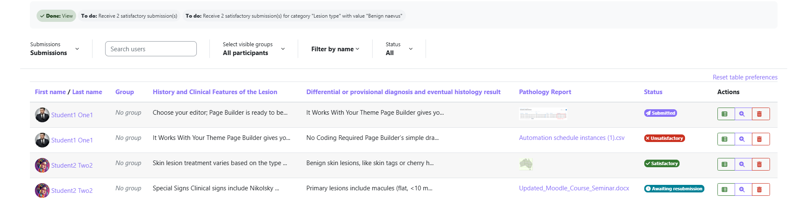
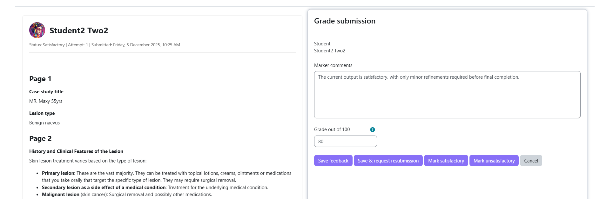
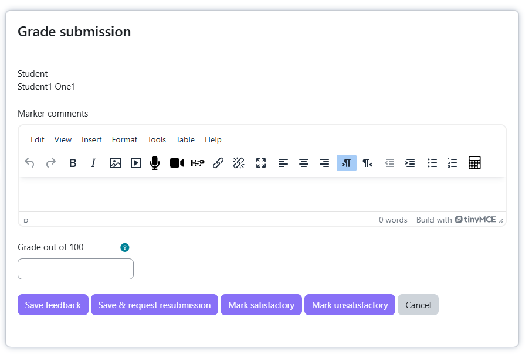
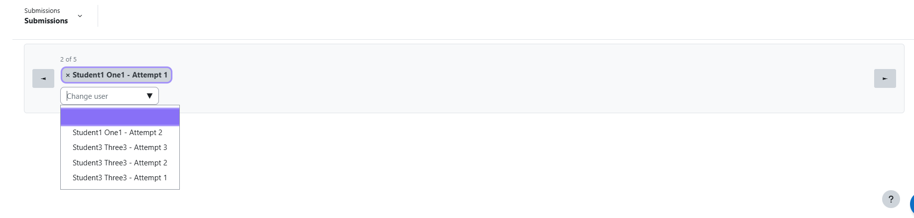

Grading Guide
This guide explains how teachers and graders review student submissions, provide feedback, and mark them as satisfactory or request resubmission.
mod/casestudy:grade — Teacher or Manager role.Accessing submissions
From the activity page
Open the Case Study activity. As a teacher you see all student submissions (or your group's submissions if group mode is on). Click any submission to open the grading view.

The grading interface
Clicking a submission opens a split view:
- Submission view — the student's answers, formatted per the view template
- Grading panel — feedback editor, grade input, and action buttons

Grader information panel
If marking criteria or rubric text was added in the activity's Grader Information field, it appears in a panel visible only to graders — students never see this content.
Grading panel options
Feedback / Marker Comments
A rich text editor for detailed written feedback. Supports formatting, links, and file uploads. Students see this when viewing their graded submission.

Notify Student
A checkbox that determines whether the student receives an email when you save the grade.
| State | Behaviour |
|---|---|
| Ticked (default) | Student receives an email notification when you click any save button |
| Unticked | No email — student sees the result next time they log in and view the activity |
The default state is controlled by the activity setting Default for "Notify Student".
Grade
If the activity is graded (e.g., out of 100 or using a scale), a grade input appears here. The grade is pushed to the Moodle gradebook when you save.
Grading actions
| Button | What it does |
|---|---|
| Save Feedback | Saves feedback and/or grade without changing the submission status. Use when you want to save progress without making a final decision. |
| Save & Request Resubmission | Saves feedback and changes status to Awaiting Resubmission. The student can then create a new version. |
| Mark Satisfactory | Changes status to Satisfactory and saves feedback. This is a final decision. |
| Mark Unsatisfactory | Changes status to Unsatisfactory and saves feedback. This is a final decision. |
| Cancel | Discards unsaved changes and returns to the submission list. |
mod/casestudy:regrade). Contact your administrator if you need to change a final grade.Navigating between submissions
At the top of the grading panel:
- ← Previous / Next → arrows to move to the adjacent submission
- A dropdown selector to jump directly to any student's submission
- A counter showing "X of Y submissions"
The navigation list shows all submitted, in-review, awaiting-resubmission, resubmitted, and previously graded submissions. Drafts are not shown.

Requesting a resubmission
- Write specific feedback explaining clearly what the student needs to change or improve.
- Click Save & Request Resubmission.
The submission status changes to Awaiting Resubmission and:
- The student is notified by email (if Notify Student is ticked)
- The student can create a new attempt, optionally pre-filled with previous data
- The original submission is preserved and linked to the resubmission
Reviewing resubmissions
When a student resubmits, the new attempt appears in the list with status Resubmitted. The navigation dropdown shows attempt numbers so you can compare the original and revised versions.
Group filtering
If the course uses groups, a group selector appears at the top of the submission list. Select a group to filter to only that group's students. This also affects the weekly email reports you receive — markers only receive data for their groups.